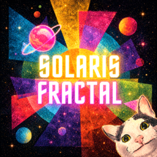

Cartografía en construcción
Próximamente
La verdad está en las convergencias.
Estamos construyendo un espacio para explorar convergencias fractales rizomáticas y cartografiar los patrones que atraviesan tus sincronicidades, tus símbolos y tus estados de consciencia.
01Ciencia
02Filosofía
03Espiritualidad
04Naturaleza
05Tecnología
06Símbolos
07Frecuencias